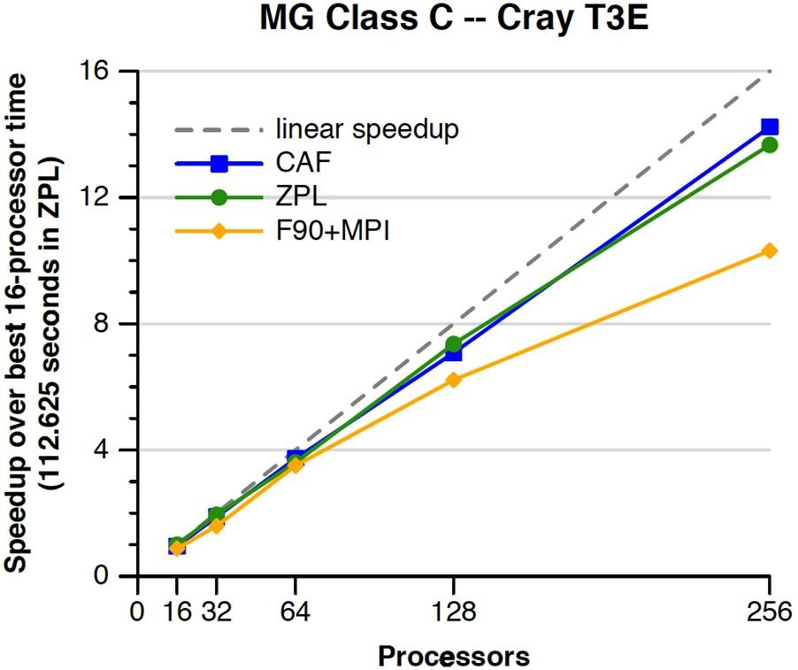
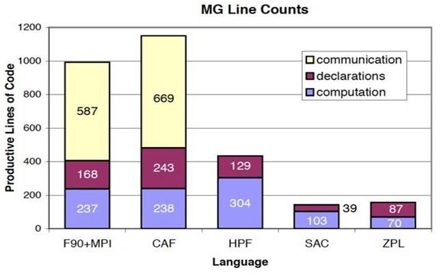
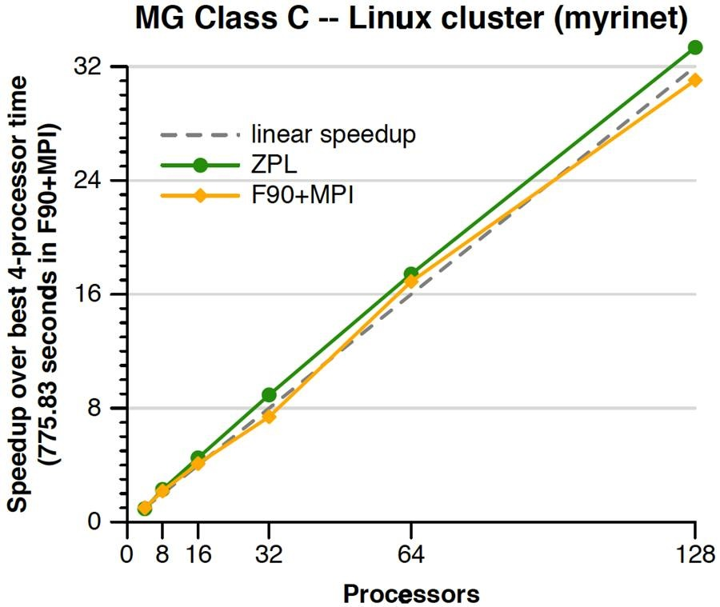
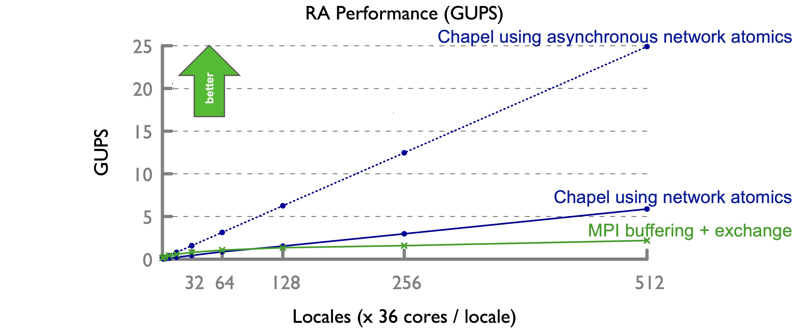
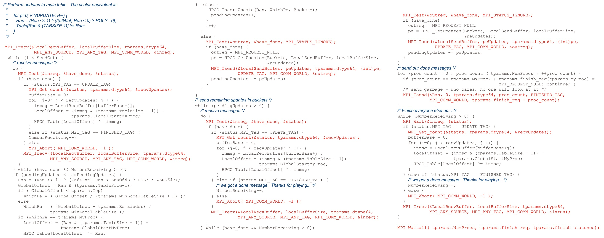
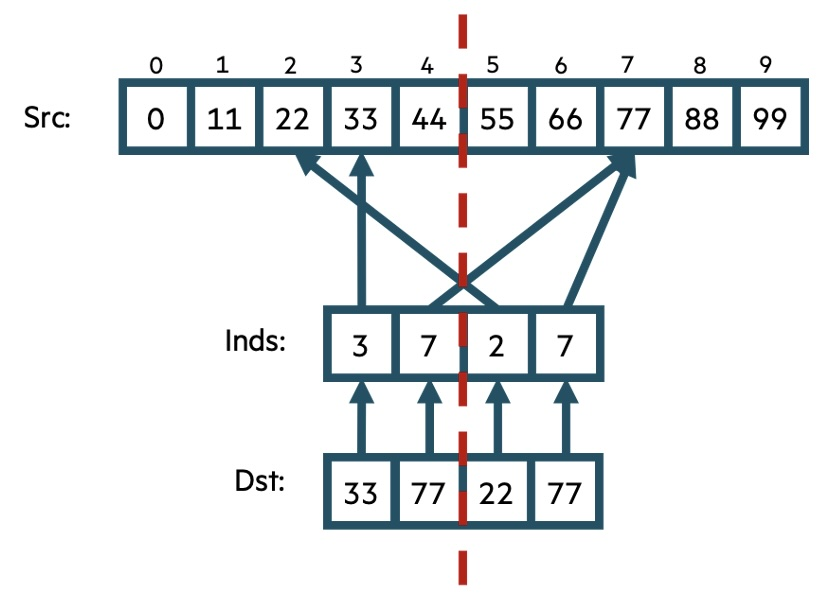
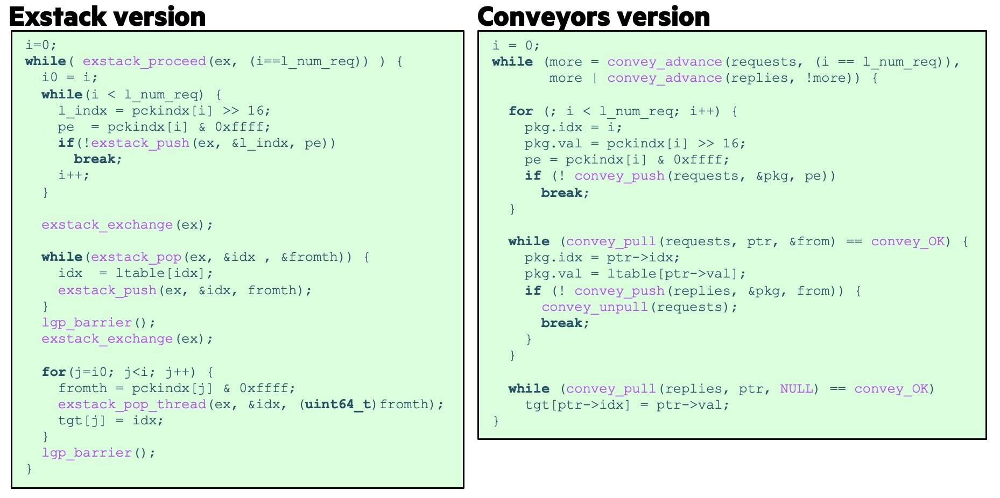
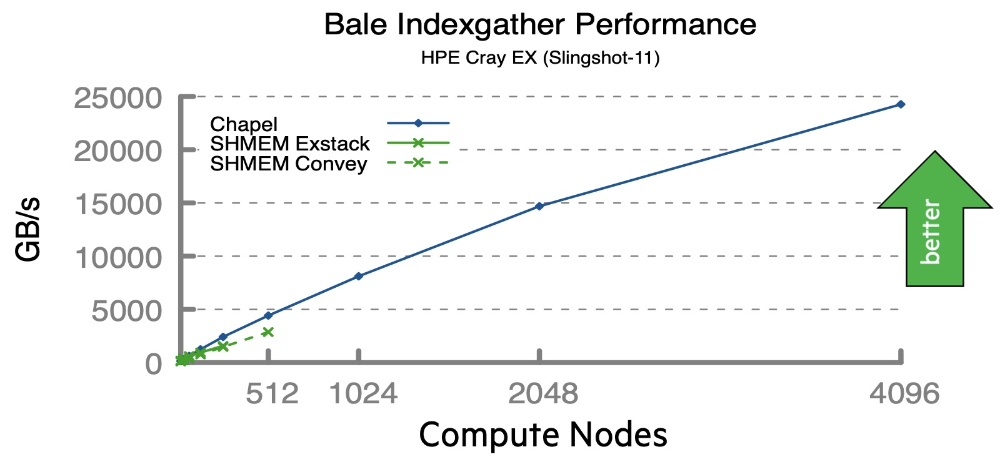

Background
In 2012, I wrote a series of eight blog posts entitled “Myths About Scalable Parallel Programming Languages” for the IEEE Technical Community on Scalable Computing (TCSC). In it, I described discouraging attitudes that our team encountered when talking about developing Chapel and then gave my personal rebuttals to them. That series has generally been unavailable for many years, so for its 13th anniversary, we’re reprinting the original series here on the Chapel blog, along with new commentary about how well or poorly the ideas have held up over time. For a more detailed introduction to both the original series and these reprints, please see the first article in this series.
This month, we’re reprinting the series’ sixth article, originally published on September 17, 2012. As a bonus, this is the first in the series to contain not one, but two myths! Comments in the sidebar and in the sections that follow the reprint contain my current thoughts and reflections on it.
The Original Article, Reprinted
Myths About Scalable Parallel Programming Languages:
Part 6: Performance of Higher-Level Languages
This is the sixth in a series of blog articles that I’m writing with the goal of describing and responding to some of the misconceptions about scalable parallel programming languages that our team encounters when describing our work designing and implementing Chapel (https://chapel-lang.org).
For more background on Chapel or this series of articles, please refer to part 1; subsequent myths are covered in parts 2, 3, 4, and 5.
“A danger that we face by holding up MPI as the performance standard to beat is falling into the trap of believing that it can’t be beaten.
”
Myth #6: High-Level Languages Can’t Compete with MPI.
In contemporary HPC conversations, MPI is often held up as the gold standard for performance, similar to how the 4-minute mile or Mach-2 served as idealized standards to beat in the 1950’s. And there’s good reason for this attitude: since the vast majority of the largest, most scalable HPC applications [note:And today as well, 13 years later.], it stands to reason that if you can’t beat MPI, then you’d better have some other compelling reason to justify your programming model’s existence, such as improved programmability, generality, or other capabilities.
Yet, a danger that we face as a community by holding up MPI as the performance standard to beat is falling into the trap of believing that it can’t be beaten, at least not by a higher-level language. Because the fact is that it can.
Here’s an example that’s now [note:We’ll see newer examples, and ones written in Chapel, in the commentary section below.] [1], showing implementations of the NAS MG benchmark (class C) written in ZPL and [note:Since the original publication, I’ve been trained to refer to these more properly as Fortran 2008’s coarrays.] outperforming and out-scaling the reference version written in Fortran+MPI on a Cray T3E.

Anyone familiar with Partitioned Global Address Space (PGAS) languages like CAF and ZPL can probably guess why these languages outperformed MPI in this experiment: On the Cray T3E, the most efficient means of communicating between processors was not the two-sided message passing exemplified by MPI’s send and receive calls; instead, better performance could be obtained by using one-sided put/get calls that permit one compute node to directly write to/read from another node’s memory without involving the CPU. Because CAF and ZPL were both implemented in terms of these one-sided puts and gets, they could perform and scale better than MPI. Other PGAS languages have demonstrated similar results for a variety of computations in the intervening years.
In addition to outperforming the reference MPI code, the ZPL version was also significantly more succinct and elegant, due to the language’s support for global-view data parallelism, which benefits multigrid computations like NAS MG. Last month’s article contained an illustrative code excerpt from the ZPL version of the NAS MG benchmark; the following graph shows an overall code size comparison between all of the languages considered in this study:

The takeaway is that high-level global-view languages like ZPL, HPF, and Single-Assignment C (SAC) [2] tend to be much more succinct than programming models like MPI and CAF (note that the HPF version did not appear on the graph above because its memory requirements for NAS MG class C exceeded the T3E’s capacity; SAC was simply not supported on the T3E at the time of this experiment). Browsing the sources, most users would conclude that the higher-level languages are not only shorter, but also tend to be more readable and modifiable. The primary difference between MPI/CAF and the high-level languages is that the former rely on the Single-Program Multiple-Data (SPMD) programming model, which necessitates a certain amount of code for bookkeeping and communication management between the program images.
“Higher-level languages permit the user to focus on what needs to be communicated, and approximately when, yet without wrestling with the mechanical details of how.
”
In addition to being more succinct than the MPI reference version, the ZPL version was also more flexible: it permitted an arbitrary problem size and number of processors to be specified at execution-time, and for the data to be decomposed in any subset of the three logical dimensions of the problem space. In contrast, the MPI reference version only supports a 3D data decomposition and requires the problem size and number of processors to be fixed at compile time and limited to powers of two. These restrictions are not imposed by MPI itself; a more general version could be written, but doing so would require additional programmer effort and would almost certainly result in a larger, more complex code.
This example demonstrates that higher-level languages like ZPL can outperform MPI. But we must also be clear that the experiment above evaluates specific instances of a given benchmark running in a specific experimental setting. The results could easily differ if we were to modify the benchmarks or to use different target architectures or implementations of MPI and ZPL.
Let’s start by considering changes to the MPI version of the benchmark. An MPI enthusiast could point out that the Fortran+MPI implementation would likely have been more competitive with ZPL on architectures like the Cray T3E if it had used MPI-2’s one-sided communication routines (or, even better, the new remote memory access capabilities available in MPI-3). And they would be right. However, note that once a user starts to rely on one set of MPI routines for a given platform and a second set for another, many of the portability benefits of MPI as an end-user programming model begin to unravel. This is not intended as a slight against MPI—keep in mind that MPI was not originally intended to serve as an end-user programming model to the degree that it has in practice; rather, higher-level libraries and languages were meant to be layered on top of it.
“High-level languages are not only able to compete with MPI in terms of performance, but can also offer a better overall solution for the end-user.
”
This, then, is one of the benefits of using higher-level languages
like ZPL and Chapel: Such languages permit the typical user to focus
on what needs to be communicated, and approximately when, yet
without wrestling with the mechanical details of how. In practice,
the ZPL compiler mapped communication regions down to [note:Though I consider this approach
to communication to have been a huge success in ZPL, Chapel does not
take the same approach. The reason is that ZPL had a very constrained
model of control flow, in which the whole program could be considered
a sequential series of data-parallel steps. As a result, the code
generated by the compiler was a very symmetric SPMD-based
implementation in which all copies of the program had a good sense of
what all the other copies would be doing at any given time. This
permitted sends and receives to be matched to one another, as in
hand-coded MPI, for example.
By contrast, Chapel has such a general, asynchronous model of
execution that there’s no guarantee that the threads of the distinct
copies of the SPMD implementation will be doing anything related to
one another at any given time. As a result, all communication in
Chapel has to be truly one-sided and un-anticipatable by the other
program instances. This makes ZPL’s coordinated approach
inapplicable.] on each of the sending and receiving
sides, demarcating where the data transfer could/should take place.
These calls were referred to as the Ironman interface [3] and were designed to be mapped to whatever
mechanisms best suited the target architecture. On the Cray T3E, they
were mapped down to the SHMEM calls implementing one-sided puts and
gets, while on a Linux cluster, they were mapped down to non-blocking
MPI sends and receives. As the following graph illustrates, this
resulted in performance that was much more comparable with the
hand-coded Fortran+MPI since now both programming models were using
the same technology, and one that serves as a good fit for the target
architecture:

The result in ZPL was an approach that benefited everyone: Programmers could reason about locality and optimize for it in a single source program without binding their code too tightly to any given architecture or means of communication; the compiler could optimize the placement of the communication using fairly straightforward dependence analysis [4]; and the runtime could map the communication calls down to a mechanism that suited the target architecture. This is why I would argue that high-level languages are not only able to compete with MPI in terms of performance, but can also offer a better overall solution for the end-user.
But to be clear, achieving this is not trivial. The ZPL effort was a significant one, and yet the result was insufficiently flexible and general to ever achieve widespread adoption. Within the Chapel project, we are striving to repeat ZPL’s successes, yet in a much more general language setting. Chapel’s greater generality has led to challenges of its own, to the extent that [note:But we have now! Again, see the commentary section below.] deliver results as compelling as the NAS MG experiment above (though it must be noted that our focus to date has been far more on the dynamic and user-defined aspects of the language than on regular, hierarchical stencil codes like NAS MG). Knowing the level of effort required to achieve results like ZPL’s is also why Chapel was designed with the multiresolution philosophy of providing “manual overrides.” For example, while Chapel supports high-level data parallel operations as in ZPL, programmers are also able to do explicit SPMD programming and even [note:Though I’m not certain, I’m fairly confident I was speaking hypothetically at the time—like, “nothing specifically prevents a user from doing message passing in Chapel if they so desire.” However, one of our early and enterprising users developed a basic MPI package for Chapel a few years after this was written that is still available today. Notably, it was contributed just a little over a year after an April Fool’s social media post had joked about just such a thing.] within Chapel.
This acknowledgment of the level of effort required to compete with MPI’s performance brings us to our next myth, a short one:
“Developing a new language tends to require a significant effort in terms of implementation and optimization, proportional to how aggressive its feature set is.
”
Myth #7: If a parallel language does not have good performance today, it never will.
Many prospective users of a new language will tend to evaluate it by downloading it, reading and executing some benchmark codes, and making a judgment based on the resulting performance. Although this approach can serve [note:More than that, I think it’s a very natural reaction to think “I’ve got a problem I want to solve now, so how well does this emerging language work at present? I can’t really afford to wait for it to improve.”], I believe it is inherently short-sighted. The performance that a new language obtains is not necessarily indicative of its ultimate performance—you only need to look as far back as Java to see this lesson in practice.
Developing a new language tends to require a significant effort in terms of implementation and optimization, and the level of effort required tends to be proportional to how aggressive its feature set is. Many of the failed HPC languages from recent decades have turned in demonstrations of reasonable performance and scalability—like CAF and ZPL in the NAS MG experiment above. Yet, most have also failed to be broadly adopted, typically due to being overly restrictive, either in terms of generality (ZPL falls into this category) or portable performance (this is arguably why CAF [note:Though I’m not very involved in the Fortran community, I believe that adoption of coarrays has increased since this was originally published; or maybe I’ve just become more aware of some of their use cases.]). For this reason, it seems to me that any successful parallel language will likely need to be more general and feature-rich than its predecessors were, and will therefore probably require a greater investment in time and level of effort before achieving broad success.
So what is to be done? Just keep putting resources into prospective languages like Chapel that purport to be a step in the right direction? Well, yes, but certainly not blindly. My point is that we should not evaluate languages based on what their implementations happen to achieve today, but by reasoning about what they will, or will not, be able to achieve over time. This tends to be a far less straightforward form of evaluation because it requires thinking more deeply about the compilation and implementation process, but it’s far from impossible. In addition to “Would I benefit from using a mature version of this language?” users should also ask themselves “Are there features in this language that will inherently prevent it from achieving performance that is competitive with Fortran/C or MPI/SHMEM or even ZPL/CAF?” If so, then the language team should be alerted to the problem before wasting more time and money on the effort; but if not, then perhaps the new language does have a chance of success, given sufficient time, effort, and patience.
This brings us to this month’s conclusions:
Counterpoint #7: The performance potential of a novel language should be evaluated by studying ways in which its features enable and/or limit its ability to achieve good performance and projecting its implementation strategy forward in time; not by simply measuring the performance that it happens to produce at a given point in time.
and:
Counterpoint #6: Well-designed high-level languages can outperform MPI while also supporting better performance portability, programmability, and productivity.
Tune in next time for more myths about scalable parallel programming languages.
Bibliography
[1] B. Chamberlain, S. Deitz, L. Snyder, A Comparative Study of the NAS MG Benchmark across Parallel Languages and Architectures, Proceedings of the ACM Conference on Supercomputing, 2000.
[2] S. Scholz, Single Assignment C — Functional Programming Using Imperative Style, Proceedings of IFL `94, Norwich, UK, 1994.
[3] B. Chamberlain, S.-E. Choi, L. Snyder, A Compiler Abstraction for Machine Independent Parallel Communication Generation, Proceedings of the Workshop on Languages and Compilers for Parallel Computing, 1997.
[4] S.-E. Choi, Machine Independent Communication Optimization, PhD thesis, University of Washington, March 1999.
Reflections on the Original Article
For me, this article remains very relevant 13 years later, in part due to attitudes about MPI still being a gold standard for performance, but particularly regarding the sense that if a language doesn’t perform well today, it never will. It’s these sorts of attitudes that keep us stuck in the mode of adding new technologies into our mash-up of HPC programming models each time we introduce a new level or flavor of hardware parallelism (C++ + MPI + OpenMP + CUDA anyone?). Meanwhile the rest of the world advances to new languages that make leaps and bounds in terms of productivity and safety, like Go, Swift, Julia, or Rust.
Where the “Reflections” sections in previous installments of this series have typically commented on a few different aspects of the original article, in this one I’m going to focus on more of a single topic: summarizing some comparisons of Chapel’s performance and productivity—relative to MPI and other HPC programming models—that have been done since the original article was published.
Comparing Chapel with MPI
If it’s not already self-evident, the reason the original version of this article focused on comparisons between ZPL and MPI was simply because Chapel had not yet reached the point where it was able to compete with MPI for key benchmarks—even ones as straightforward as STREAM Triad. So ZPL was the best we had available for making our arguments at the time.
However, in the years that followed its publication, we began closing the gap. And then we went further, resulting in benchmark results like the following one from a presentation entitled Chapel’s Language-based Approach to Performance Portability, presented at SIAM CSE19:

This graph focuses on the HPC Challenge Random Access benchmark (HPCC RA), which asks the user to make random updates to random elements of a distributed table (1D array) as quickly as possible, measured in Giga-Updates Per Second (GUPS). The performance results shown were gathered on 512 nodes of a Cray XC, for a total of 18k cores. And, as can be seen, it’s a case where Chapel outscales and outperforms MPI.
Introduction to HPCC RA in Chapel
To understand why Chapel beats MPI, let’s look at the main computational loop, which is written in Chapel as:
forall (_, r) in zip(Updates, randomValues()) do
T[r & indexMask].xor(r);
Some of the key variables used by this loop are as follows:
-
Updates— a domain, or index set, representing the number of updates that need to be made:{0..<numUpdates}. More importantly, it is a distributed domain, which means that parallel loops over it will result in distributed multicore execution. -
randomValues()— a user-defined parallel iterator that generates random numbers using the algorithm specified by the RA benchmark. -
T— a distributed array ofatomicintegers representing the table whose elements will be updated. The use of atomic values avoids the potential for races if two tasks try to update the same element [note:HPCC RA actually permits a certain number of such races, but this Chapel version is race-free.]
Given those variables, this loop says “In parallel (forall) iterate
in a lock-step manner (zip) over (i) the set of Updates that need
to be made and (ii) the randomValues(), dropping the update number on
the floor (_) and calling the random value r. For each iteration,
update the element of T corresponding to r using an atomic xor
operation.” Because Updates is a distributed domain and
randomValues() is a parallel iterator, this results in all of the
cores on all of the compute nodes making random updates to the table
in parallel.
“By describing the computation using high-level parallel abstractions, the compiler and runtime are able to optimize the program in ways that make good use of the target hardware.
”
Explaining Chapel’s Performance Advantage
Chapel’s performance advantage over MPI for this benchmark stems from two main factors:
-
On the Cray XC (and HPE Cray EX), Chapel implements the atomic updates performed by this benchmark using the network hardware’s native support for atomic operations. At scale, this provides a speed advantage over doing the traditional buffering, sends, and receives that are used in [note:I should note that in addition to the overheads of message-passing, the scalability of the MPI reference version is also hurt by a condition set by the HPCC RA benchmark that limits how many updates can be batched together at a time. This is the reason for the flattening of MPI’s curve: as the number of locales approaches that batching limit, it reduces the amortization benefits of message passing. In contrast, the Chapel version does all of its updates in a fine-grained manner, so isn’t affected by the batching limits.]
-
The
forallindicates to the compiler that the iterations of the loop are order-independent. This permits it to implement the atomic updates in an asynchronous manner such that each task will fire off updates as fast it can, only waiting for them to complete once it’s out of work and about to exit the loop. The impact of this second optimization is responsible for the performance jump between the two Chapel lines in the graph above, where the lower one measures performance with the optimization turned off, such that each task waits for its atomic operation to complete before going on to the next one.
These two factors illustrate some of the key benefits that parallel languages can provide in terms of performance optimizations: By describing the computation using high-level parallel abstractions (“Use all the distributed compute resources to perform these updates in parallel”), the compiler and runtime are able to generate and optimize the program in ways that make good use of the target hardware—in this case by leveraging important hardware features like network atomics and asynchronous operations.
Contrast this with parallel programming models like MPI, in which the user doesn’t just specify what the computation should do, but also how it should be implemented on the distributed system—in the case of HPCC RA, by using explicit buffering and message passing. Specifying those details constrains the implementation, preventing the use of fine-grained asynchronous operations like the ones used by Chapel. Moreover, since MPI is a library, any optimizations must be implemented by the user rather than benefiting from the help of a compiler.
“Imposing an SPMD programming model on the user results in additional bookkeeping and detail management that is not present in a global-view language like Chapel.
”
Productivity Comparisons
Another benefit that this example illustrates is the productivity that can come from language-based parallelism. This can be seen by inspecting the MPI code that is equivalent to the Chapel loop above (squint or zoom way in):

In this code, the red lines are the MPI calls that implement the communication and inter-node coordination, while the blue lines are comments. Why is there so much code? In part, it’s because C is an older and lower-level language than Chapel, so doesn’t have abstractions like iterators, zippered iteration, or type inference. In part, it’s because imposing an SPMD programming model on the user results in additional bookkeeping and detail management that isn’t present in a global-view programming language like Chapel that supports distributed domains and arrays. And in part it’s because all of the communication and buffer management must be done explicitly by the programmer.
Note that the comment at the start of the code, which deciphers what the rest of it does:
/* Perform updates to main table. The scalar equivalent is:
*
* for (i=0; i<NUPDATE; i++) {
* Ran = (Ran << 1) ^ (((s64Int) Ran < 0) ? POLY : 0);
* Table[Ran & (TABSIZE-1)] ^= Ran;
* }
*/
is similar in size and clarity to the original, equivalent Chapel loop that we started with:
forall (_, r) in zip(Updates, randomValues()) do
T[r & indexMask].xor(r);
In short, we have concise, reasonably clear code that outperforms and outscales the much longer and more detailed MPI equivalent by virtue of enabling compiler optimizations. A good counter-example to Myth #6.
Comparing Chapel with Exstack and Conveyors
Since conducting this 2019 study of RA, our team has not done many additional comparisons with MPI, in large part because that was the year we turned our attention to supporting flagship Chapel applications like CHAMPS and Arkouda. (And for some reason, users with a working Chapel application don’t seem to want to write a second version of it in MPI for purposes of comparison!)
That said, we did do a similar comparison with the SHMEM-based Exstack and Conveyors libraries, which is worth a mention here despite not being MPI-based because it features:
-
a more recent vehicle for comparisons: Bale Indexgather
-
a newer system and network: HPE Cray EX running Slingshot-11
-
a larger system scale: 4096 compute nodes (over half a million cores)
-
a use of aggregators, which were instrumental to Arkouda’s distributed sort performance
Like HPCC RA, this example demonstrates another case where straightforward Chapel code outperforms and outscales a lower-level, more explicit approach. Since this article is running long, I won’t go through it blow by blow, but will summarize with this cartoon of the “gather” operation that Indexgather computes:

this loop of Chapel code that implements it:
forall (d, i) in zip(Dst, Inds) do
d = Src[i];
these listings of the equivalent code in Exstack and Conveyors:

and this performance graph showing the resulting performance and scalability:

Like the HPCC RA case, this is an example where the Chapel compiler is
able to apply transformations in order to optimize the communications
required by the computation. In this case, it’s Chapel’s
--auto-aggregation optimization, which coarsens what would otherwise
be fine-grained puts and gets to amortize their overheads. The
SHMEM-based technologies do this as well, but not as scalably.
Other, More Recent Comparisons
Back on MPI comparisons, the following recent studies are other notable cases where Chapel performs competitively with, or better than, MPI:
-
This comparison between Chapel and MPI in the context of a cavity flow solver, written by Jeremiah Corrado as part of his Navier-Stokes in Chapel blog series. This study is somewhat different than the ones above in that it focuses on regular, structured communications rather than optimizing irregular fine-grained remote operations.
-
A recent multi-language comparison of distributed radix sorting performed by Michael Ferguson et al. that’s summarized in this GitHub repository. This November, a more detailed write-up of the study that includes OpenSHMEM, Conveyors, and Lamellar, in addition to Chapel and MPI, will be published as part of the PAW-ATM workshop at SC25, under the title Comparing Distributed-Memory Programming Frameworks with Radix Sort.
“HPC is, by nature, an impatient branch within the impatient field of computer science.
”
Wrapping Up
Wrapping up, I want to note that while this article demonstrates that concise ZPL and Chapel programs can outperform MPI due to the optimization opportunities that their high-level abstractions permit, readers should not conclude that Chapel will necessarily always outperform MPI. The cases highlighted in this article are notable in that they received particular attention due to their importance as fundamental Chapel idioms (HPCC RA and Navier-Stokes-style stencil operations) or to user applications (Bale Indexgather and distributed sorting). Chapel has many other opportunities for optimization ahead that have not received a similar amount of attention to date.
HPC is, by nature, an impatient branch within the impatient field of computer science. But note that in the 13 years since this article was written, Chapel has grown from the point of not being able to compete with MPI for something as simple as STREAM Triad, to being able to compete with it, and then beat it in cases like HPCC RA. It has gone on to scale to over a thousand GPUs and a million processor cores in the context of production-grade user applications. A [note:While in Milano for IPDPS this summer, I learned that its Duomo took nearly six centuries to complete. Oh for even a tiny fraction of that kind of patience from the HPC community!] can go a long way.
Is Chapel perfect? No, unfortunately not (yet), and we’ll come back to that topic in the final article in this series. But first, in next month’s penultimate installment, we’ll look at the myth that successful languages are necessarily small / minimal. See you then!